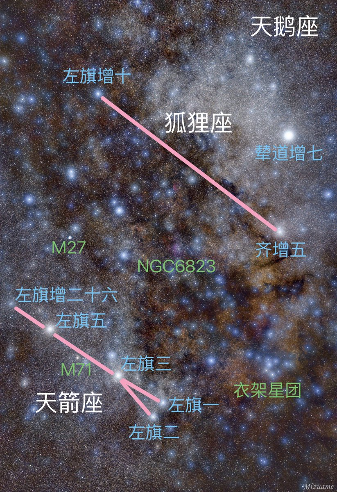

水母雨🍥
@ena1_mizuki
@Rain_Antar1121 @litgraley 那可以说这片银河像狐狸😎
不过去查了，这个星座最开始被想象成“叼着鹅的狐狸”，巨大狐狸太强大了可以叼着天鹅

Rain Antares🏳️⚧️🍥
@Rain_Antar1121
@ena1_mizuki @litgraley 一眼看到衣架星团于是标一下🥰喜欢小狐狸衣架，六颗星排一起满足强迫症😘
狐狸座是最典型的梦里命名的星座嘛，就这两颗星一条线到底狐狸在哪四百年没人看出来😵💫以后星际联邦狐狸星区的教科书上都没法写“本区的亮星排列从地球视角看形似狐狸）” https://t.co/u8FMcLzWjv